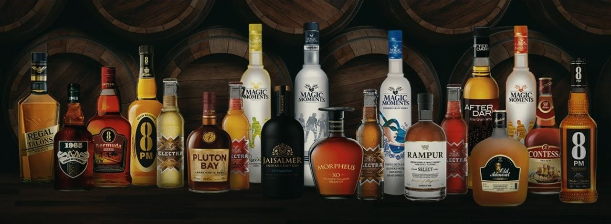
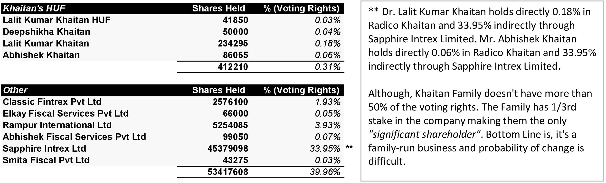
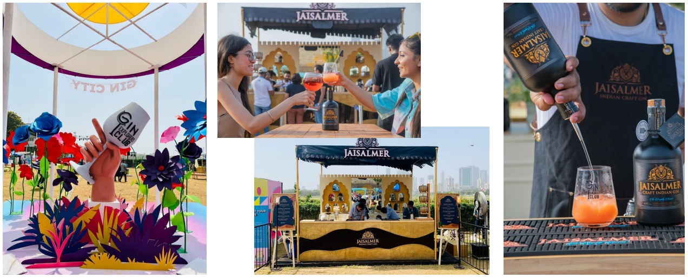
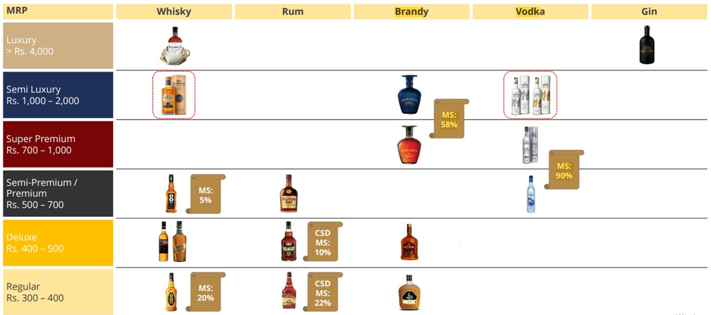
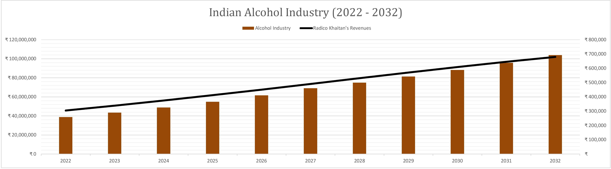
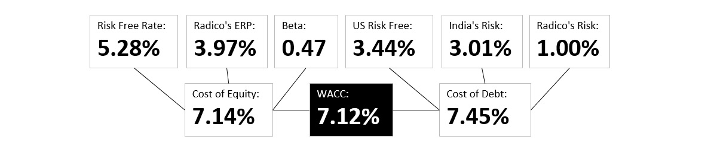
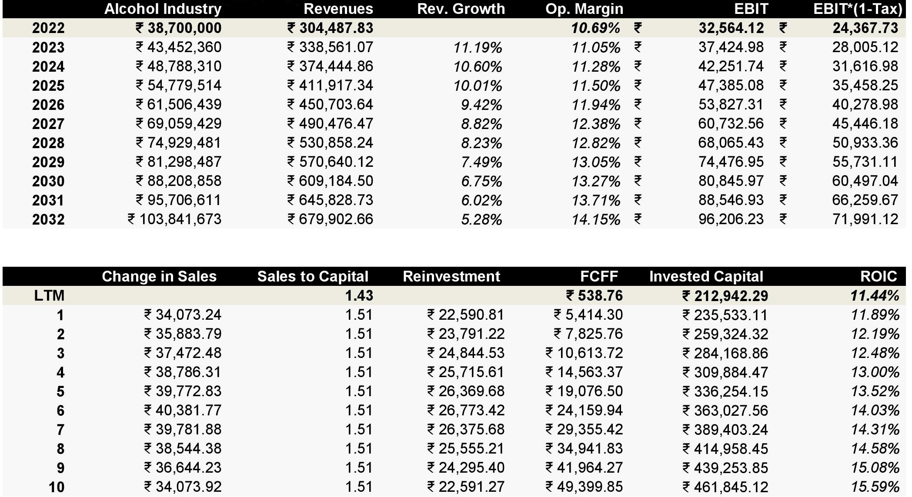
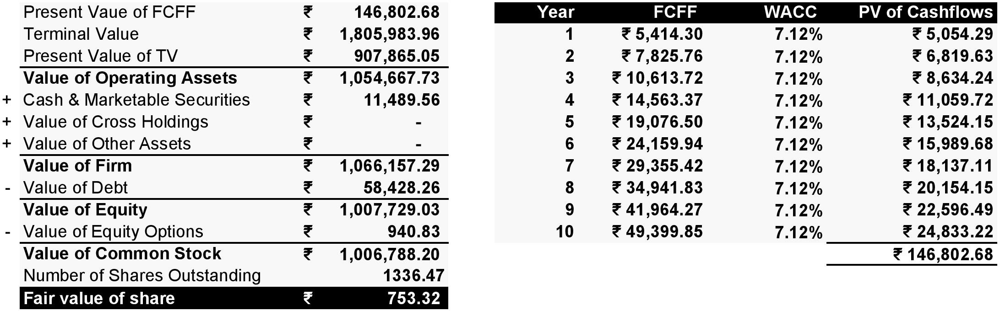

Radico Khaitan - An Alcoholic Teen
Radico Khaitan is one of the most recognised IMFL (Indian Made Foreign Liquor) brands in India. It focusses on distillation and bottling for branded players and canteen stores of armed forces. Radico Khaitan ventured into its own branded IMFL products and launched its first brand 8PM whisky which became its millionarie brand within a year of its launch.        
Khaitan Family, the Promoters and Management of Radico Khaitan have been in the liquor industry since 1943. Magic Moments leads the vodka Industry in India with over 58% market share whereas Morphues Brandy leads the premium brandy category with over 56% market share. During last decade, Company has launched 12 new brands of which 11 are in premium category. Radico Khaitan is one of the major supplier of branded IMFL to Canteen stores department(CSD) in Defence segment. The company's brands are well recognised and has built a brand equity for itself in international markets. Contessa Rum is the highest selling brand in defence segment making Radico a leader in the market.
Radico Khaitan Products: RKL’s portfolio, at present, includes five millionaire brands, namely, ‘8PM Whisky’, ‘Contessa Rum’, ‘Old Admiral Brandy’, ‘Magic Moments Vodka’ and ‘8 PM Premium Black Whiskey’. This apart, it distributes other successful brands like ‘Whytehall’ whisky and the ‘Brihans’ range of brands acquired inorganically. RKL has continuously launched several brands over the past decade. In FY22, it launched Magic Moments Dazzle Vodka and Royal Ranthambore Blended Malt Scotch. However, the revenue of the company appears to be concentrated within Uttar Pradesh, accounting for around 27% of IMFL sales in FY22. The company has 28 bottling units spanning across the entire country, of which five are owned and 23 are contract-bottling units. RKL’s products are sold through over 75,000 retail and 8,000 on-premises outlets. 8PM name was unique as Indians usually drink at 8. Did 1 million case 1 year and came in limca book of records.
Family Nature/Habits/Personality: The Son and Daughter of Mr Kaithan (during college time) are just same as the average Indian family they peep in to the price in the menu then they look for the associated items when they went out in Caunaught place. The family lives in Friends Market, New Delhi. They took the path for secure customers so initially they target selling through the Defence canteens and now they have large base in the canteen revenue. In the time of PONTY CHADDA Lala ji has set their share and Ponty was selling his brand as a contractor. There was time when one can find everywhere 8PM in UP created a Brand. The son (Abhishek Khaitan) is more in taking risk and which results the new premier products. Lala ji is very happy and least bother about the expansion. They want to preserve the quality.
Strong position in the defence segment: RKL is one of the largest players in the defence market, where its most famous brand is ‘Contessa’ rum. Two more brands – ‘After Dark Whisky’ and ‘Morpheus Brandy’ – have been approved to supply to the canteen store department (CSD). The company derives around 10%-11% of IMFL sales income from the CSD. There are stringent conditions for entering into the CSD segment, leading to entry barriers for new players
Problems in the Industry (Highly regulated industry): The liquor industry is highly regulated in India, with each state controlling the production, sales, and duty structure, independently. As a result, there are difficulties in the transfer of production from one state to another along with the huge burden of duties and taxes. The states control the licenses for production, distributorship, and retailing as well. Furthermore, there is also the risk of the introduction of prohibition laws in states, with negative connotations associated with the liquor industry in India.
Corporate Governance: Although, Khaitan Family HUF doesn't have more than 50% of the voting rights. The Family has 1/3rd stake in the company making them the only "significant shareholder". Dr. Lalit Kumar Khaitan holds directly 0.18% in Radico Khaitan and 33.95% indirectly through Sapphire Intrex Limited. Mr. Abhishek Khaitan holds directly 0.06% in Radico Khaitan and 33.95% indirectly through Sapphire Intrex Limited. Bottom Line is, it's a family-run business and probability of change is difficult.
Cyclicality in raw material prices: ENA forms a major component of the raw materials required for the company’s product portfolio, and hence, commodity price volatility remains one of the key considerations. ENA is produced from the molasses, a byproduct, in the sugar manufacturing process, or from grains. Lower-than-anticipated sugarcane production or any sharp rise in the prices of molasses or ENA will have an impact on the company’s profitability. The prices of ENA and molasses are likely to increase, with the government encouraging its alternative use in the EBP, offering attractive returns. However, RKL produces more of its alcohol through the grain-based route and has adequate capacity to shift to more grain-based distillation, which insulates it against any significant increase in the prices of molasses. The company also has the advantage of backward-integrated distillation capacities, which insulates the company to a certain extent from any significant movement in the ENA prices. The margins are susceptible to volatility in the prices of molasses and grains. However, the company maintains a sizeable inventory of molasses, which insulates it against short- and medium-term fluctuations in the prices of molasses.
Potential in the Industry: The key demand drivers of the industry have been growing disposable incomes, increasing rural consumption, rapid urbanisation, greater acceptance of social drinking, and a higher proportion of the young population entering the drinking age, which has a cumulative favourable effect on liquor manufacturers. India has a young demographic profile, with a median age of 28 years, and around 67% of the population is within the legal drinking age. These two indicators represent significant growth opportunities for the industry. Liquor policies governing its production and sale are entirely controlled by the respective state governments. With all the alcohol-consuming states/Union Territories having their own regulations and entry-exit restrictions, it is difficult for new entrants to procure licenses, thus providing a competitive advantage to the existing players.
Competitive Advantages (Premiumization & Market Share): Radico has aggressively spent behind its brands to drive premiumisation and gain market share. Radico aims to leverage brand equity of Magic Moments by launching more variants (GM accretive) and gaining share in super-premium segment. With internet culture and middle class emerging, drinking is not a taboo. With income level rising, premiumization is happening and it would beneift Radico. It's not a strong and sustainable competitive advantage in my opinion, as it's easier for Alcoholic Beverages to yield higher margins. With good market leadership, Radico has attained good price leadership too.
"I love Morpheus brandy. After drinking it a few months back, I have never had any other alcohol. I have introduced it to a few of my friends recently and they all have shifted their preference towards Morpheus. The brandy is a bit expensive though as compared to other local alcohol but its really one of the best among Indian liquors." ~ An occasional drinker review
Pricing & Market Share: Radico Khaitan Products starts at "Regular" range of ₹300 to ₹400, "Deluxe" range of ₹400 to ₹500, "Semi Premium" range of ₹500 to ₹700, "Super Premium" range of ₹700 to ₹1,000, "Semi Luxury" range of ₹1,000 to ₹2,000 and "Luxury" range of over ₹4000. Radico has attained price and market share leadership in Magic Moments - Vodka (Market Share: 90%) and Verve - Vodka (Market Share: 20%). Market leadership with Contessa (Rum) and 1965 Victory along with price premium. Market leadership in Brandy with Morpheus Brandy at 58%.
Revenues to Profits: The major slice of revenues is churned out by Excise Duty (76.2% of revenues in FY22) and Cost of goods sold (13.2% of revenues in FY22), which is controlled by ENA and molasses prices. ENA prices are projected to increase at a CAGR of 4.32% during 2022-2027.
Competition: Competition comes from United Spirits Ltd, United Breweries Ltd and Global Spirits Ltd. They also follow similar competitive strategies of "Premiumization and Market Share" to build a strong customer brand loyalty and offers better-quality products across price points with a value for money proposition.
My Narrative and Valuation
Based on the key pointers and fundamentals, here are some forecasts and judgements that I made to value Radico Khaitan. It can be wrong, it's a forecast overall!
1) The Market Size: The Indian Alcohol Market in India was sized at ₹3,870 billion in 2022, after having grown at a CAGR of 12.28% over next 5 years. The market is divided under 5 segements: Beer, Spirits, Wine, Cider, Perry and Rice Wine, and Hard Seltzer. By 2025, 12% of spending and 9% of volume consumption in the Alcoholic Drinks market will be attributable to out-of-home consumption (e.g., in bars and restaurants). In the Alcoholic Drinks market, volume is expected to amount to 14,204.3ML by 2025. In global comparison, most revenue is generated in China (₹26,050.00bn in 2022).
The market's largest segment is 'Spirits' with a market volume of ₹2,700 billion in 2022. Spirits, or distilled liquor denotes alcoholic beverages that have been generated via distillation from wine, fermented fruits or grains. The most important types of Spirits covered in the Consumer Market Outlook are Whisky, Vodka, Rum, Gin, Brandy as well as Liqueurs & Other Spirits (including local spirits like Baijiu in China). Due to the distillation the alcohol content of Spirits is much higher than that of most wines and beers and typically ranges from 20 vol% to 50 vol%.
2) The Market Share: Radico Khaitan has currently 3.31% Market Share of the Indian Alcohol Industry in FY22. Competitors like United Spirits Ltd, United Breweries Ltd and Global Spirits Ltd, have a bigger market share in the industry. And because the corporate governance is a bit off the table, I don't put up a probability of management change. The fact that Radico Khaitan pays out 76.20% as Excise Duty to the Indian Government, the net market share of the company is 0.79% instead.
3) Revenues: Based on the market size and market share, I forecasted the revenues to go from ₹304,487.83 lakhs to ₹679,902.66 lakhs in the next 10 years. In other words, a Sales CAGR starting from 11.19% to 5.28% (risk free rate) during the next 10 years.
4) Operating Margin: Radico Khaitan currently has 10.69% Operating Margin in FY22. The Global Industry has a median operating margin of 14.6%. I believe Radico Khaitan can achieve the industry average in the next 10 years.
5) Reinvestment: Radico Khaitan makes Rs. 1.43 for every Rs. 1 of Invested Capital in FY22. However, the 75th percentile of gross industry makes Rs. 1.51 for every Rs. 1 of Invested Capital in FY22. I projected Radico Khaitan to reinvest roughly Rs.248.90 crores on average for the next 10 years to achieve a Sales CAGR of 8.36% in next 10 years. Radico has a reinvestment rate of 97.79% in FY22 which is mostly due to their huge working capital needs.
6) The Cost of Capital: I used CAPM model to find out the Cost of Equity of 7.14% and risk premiums add-ons (country + market + company) to calculate the Cost of Debt of 7.45%. The overall cost of capital (WACC), that I came up with is 7.12% based on capital structure of debt and equity, which is mostly equity.
Based on the narrative I explained above, I came up with a fair value of ₹753.32 per share. Radico Khaitan's Stock was trading at ₹1,096.25 per share (September 14, 2022).
Thank you for reading! Check out my valuation by downloading the DCF Radico Khaitan's Analysis below.